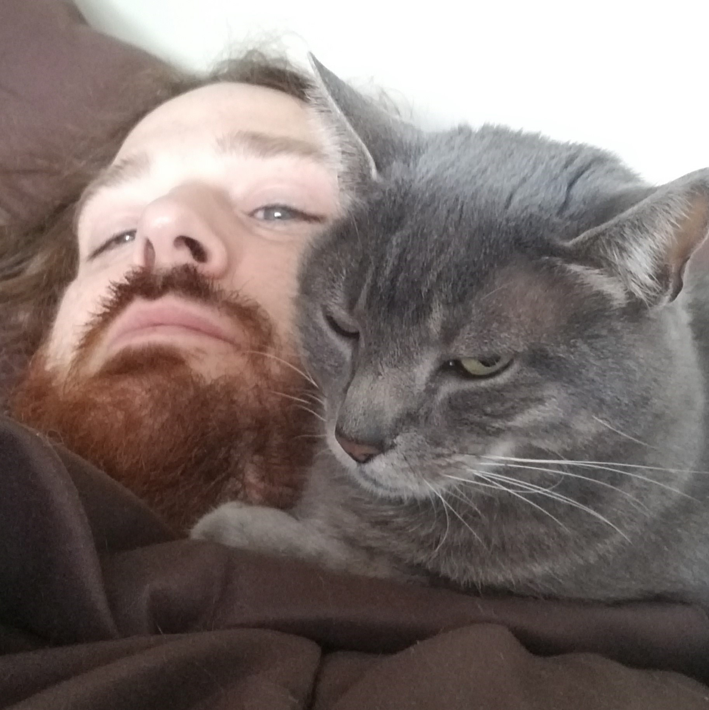

You have found yourself in the online home of W. Ross White and his writing. Enjoy looking around!
In About Ross you can learn about me and what else I get up to, along with information about contacting me and supporting me.
You can explore the original New Horizons Mission about a generational starship launched a hundred and fifty years from now, to a star a hundred and fifty years away. You can also check out the reboot of Launch which I'm currently working on called Chasing Stars.
You can also checkout other writings in the Dispatches from the Void. There you can find things like my Updates Blog where I give updates about my writing, and experiences I'd like to share. And don't miss the Just for Fun zone where you can see some of my incredibly cringey early web projects!
If you are a potential employer in the tech industry who has found your way here while looking me up online, I encourage you to checkout my online resume site as wrosswhite.ca